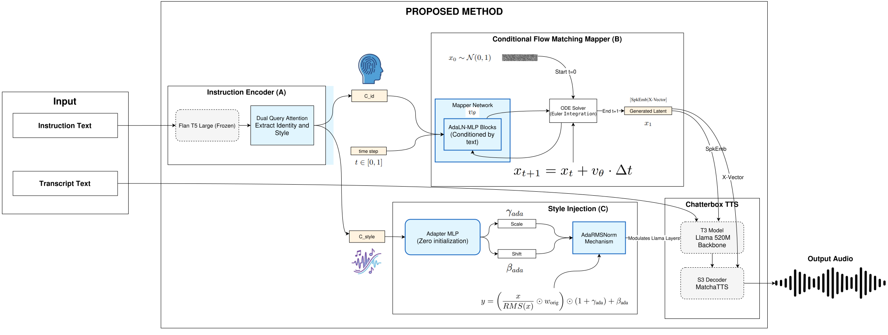
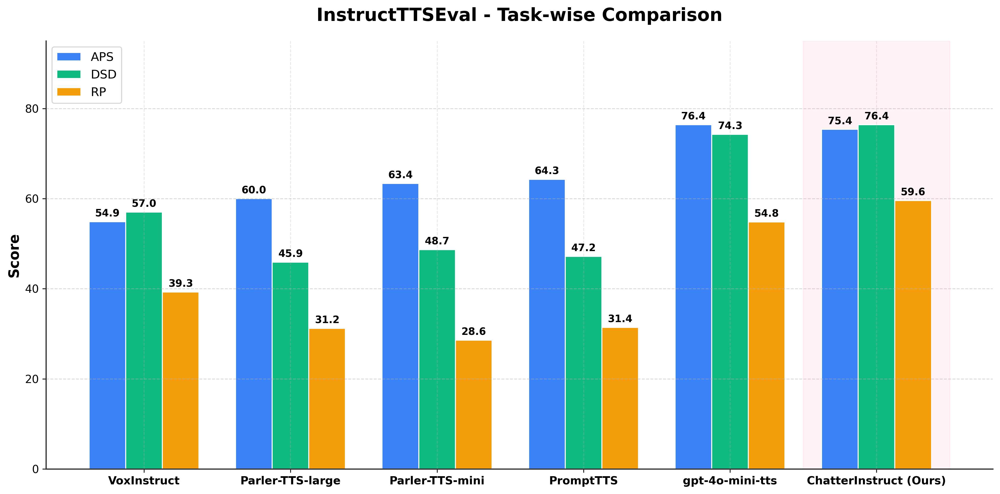
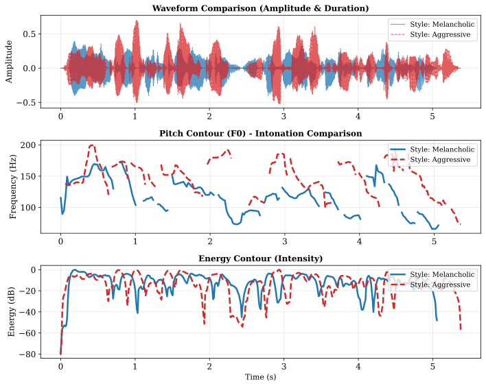

ChatterInstruct: Natural Language Voice Design via Text‑to‑Speaker Latent Mapping and Speaker‑Style Disentanglement
Abstract: Open-source instruction-following TTS models lag behind proprietary systems on InstructTTSEval (38-50 vs. 68+). We trace this to parametric models failing on free-form tasks and unified models entangling identity with style. We propose ChatterInstruct, a modular framework disentangling Text-to-Speaker from Text-to-Style. A frozen Flan-T5 with Dual-Query attention extracts separate identity and style vectors. A conditional flow-matching mapper generates speaker latents from identity, while style is injected via AdaRMSNorm adapters into a frozen Llama backbone. ChatterInstruct achieves 70.5 on InstructTTSEval, surpassing GPT-4o-mini-TTS (68.5), while maintaining competitive zero-shot speaker similarity (0.788) on LibriTTS-R.
1. Architecture

Figure 1: ChatterInstruct architecture with Dual-Query Encoder, Flow Matching Mapper, and AdaRMSNorm adapters.
2. Results
2.1. Instruction-Following (InstructTTSEval)
TTS
APS
DSD
RP
Avg.
Closed-sourced
gemini-flash*
92.3
93.8
80.1
88.7
gemini-pro*
87.6
86.0
67.2
80.3
gpt-4o-mini-tts
76.4
74.3
54.8
68.5
Open-sourced
VoxInstruct
54.9
57.0
39.3
50.4
Parler-TTS-mini
63.4
48.7
28.6
46.9
Parler-TTS-large
60.0
45.9
31.2
45.7
PromptTTS
64.3
47.2
31.4
47.6
PromptStyle
57.4
46.4
30.9
38.2
ChatterInstruct (Ours)
75.4
76.4
59.6
70.5

2.2. Zero-Shot Speaker Generation (LibriTTS-R)
We evaluate zero-shot speaker generation on the LibriTTS-R test-clean subset. The results demonstrate ChatterInstruct's superiority in both speaker similarity and generation stability.
Figure 2a: Zero-Shot Speaker Similarity (SECS). ChatterInstruct achieves the highest SECS of 0.7881, surpassing ParlerTTS (0.7416) and VoxInstruct (0.7172). This metric measures the cosine similarity between WavLM-Base-Plus embeddings of generated audio and ground-truth utterances, validating the Flow Matching Mapper's effectiveness in mapping disentangled identity cues to accurate speaker latents.
Figure 2b: Speaker Generation Stability. ChatterInstruct demonstrates superior intra-speaker consistency, reaching 0.8937 ± 0.0385. This represents a 41% reduction in standard deviation compared to ParlerTTS (0.8084 ± 0.0651), confirming robust zero-shot stability and consistent speaker identity across multiple generations without needing reference audio.
3. Audio Samples
ChatterInstruct generates speech from the same text under three InstructTTSEval tasks: Acoustic-Parameter Specification (APS), Descriptive-Style Directive (DSD), and Role-Play (RP).
"You can just do what I'm doing and pretend it's over. Like it's over between David and me done."
gender: Female. pitch: Relatively high female pitch. speed: Rapid delivery, particularly at the onset, slowing slightly for emphasis on the final word. volume: Conversational with a slight elevation, conveying assertiveness. age: Young adult. clarity: High clarity with distinct pronunciation. fluency: Fluent and smooth speech flow. accent: American English. texture: Bright and clear vocal texture. emotion: Exasperated and decisive. tone: Assertive and conclusive, with a touch of finality. personality: Expressive and resolute.
Speak with a resolute demeanor, combining an elevated pitch and clear pronunciation to emanate finality, while maintaining an expressive and bright vocal quality.
In the debate room, the youthful debater hammers her closing argument with assertive clarity.
"I'm sick of it. No plea. We're gonna win this thing, Beck. You, me, and Pugsley. We're a team. Now, come on. Let's go."
gender: Female. pitch: High female pitch, peaking with exasperation. speed: Rapid, clipped pace. volume: Forceful volume. age: Young adult. clarity: Clear articulation. fluency: Fluent delivery. accent: General American English. texture: Tense, sharp texture. emotion: Frustrated annoyance. tone: Exasperated tone. personality: Assertive, impatient.
Channel a forceful volume paired with fluent articulation, allowing the young adult female voice to carry an underlying impatience, tinged with a tense exasperation that peaks dramatically.
Channel the impatience of a young entrepreneur pitching a bold idea, losing patience as others fail to understand.
"Alright! Alright! Yes! That was great! She gets it! Now she knows what it's like to be a minority!"
gender: Male. pitch: High-pitched for a male voice, expressing strong excitement. speed: Rapid pace, especially at the beginning, maintaining quick delivery. volume: Loud and forceful throughout, bordering on shouting initially. age: Young Adult to Middle-Aged Adult. clarity: High clarity, words are distinct despite the speed and volume. fluency: Highly fluent, speech flows without interruption. accent: American English. texture: Bright and somewhat strained due to intensity. emotion: Intense excitement and triumph, possibly shifting to vindication. tone: Exuberant and celebratory, ending with a slightly knowing tone. personality: Extroverted, highly expressive, energetic.
Set the stage with a bright, somewhat strained texture, capturing the immense intensity and extroverted exuberance of the voice. As you proceed with rapidity, ensure the rhythm cascades with high fluency; the speech should flow uninterrupted, adopting a loud, forceful presence that borders on shouting in its initial moments.
Craft the message with the smoothness of a spring breeze over a lake—high clarity, rapid pace, delivered with intense excitement, capturing the energy of young adults through triumphant jubilation.
"So I was right. Oh, it's like a hot fudge Sunday from a soul."
gender: Female. pitch: High female pitch, rising with exclamatory emphasis on 'right!' and then becoming more varied with a slight downward melodic contour on 'soul'. speed: Initially quick and assertive, then transitions to a slower, more drawn-out pace with an almost sing-song rhythm. volume: Begins at a conversational to slightly elevated level with excitement, then softens slightly with a more expressive delivery. age: Young adult to adult. clarity: Clear and distinct pronunciation. fluency: Highly fluent, with a smooth and connected delivery. accent: General American English. texture: Bright and slightly sweet vocal quality. emotion: Starts with triumphant excitement, shifting to delighted and appreciative satisfaction. tone: Initially exclamatory and confident, then becomes more whimsical and pleased. personality: Expressive and enthusiastic.
Incorporate a youthful, enthusiastic female voice with a high pitch, emphasizing a confident exclamatory tone at the start; let it transform into a whimsical delight, ensuring clarity and distinctness throughout.
Bring forth the energy of a lively friend sharing good news, starting with exuberant enthusiasm and settling into a warm, satisfied cadence.
"My stomach is upset. It's where I keep my worry. My friend is in trouble and you are going to fix it because if you don't, I will rip you in half."
gender: Male. pitch: Low male pitch, rising sharply with anger. speed: Deliberate pace initially, accelerating with rising intensity. volume: Starts conversational, escalating quickly to shouting. age: Middle-aged adult. clarity: Highly distinct and articulate. fluency: Very fluent and controlled delivery. accent: Standard American English. texture: Deep and slightly gravelly, becoming strained under pressure. emotion: Transitions from expressed discomfort to intense anger and menace. tone: Shifts from complaining to overtly threatening and hostile. personality: Assertive, intense, easily provoked.
Incorporate a deep and slightly gravelly voice while ensuring each word is highly distinct when shifting from a complaining tone to overtly threatening as the mood intensifies.
Channel the energy of an influential leader in a crisis, commanding attention with authority and escalating intensity.
"Look, I want a lawyer, the Justice Department, somebody I can trust. I'm just trying to protect my family, okay? Not from your company, from the government."
gender: Male. pitch: Relatively high-pitched for a male, conveying tension. speed: Fast-paced and urgent. volume: Loud and forceful. age: Young adult to middle-aged male. clarity: Clear articulation despite the speed. fluency: Fluent but rushed speech flow. accent: American English accent. texture: Strained vocal texture. emotion: Anxious and desperate. tone: Insistent and defensive tone. personality: Anxious and protective.
Convey the anxious emotions of a middle-aged American male using a strained vocal texture that underscores his fast-paced speech, while maintaining vigorous volume and clarity throughout to mirror his inner tension and protective instincts.
Feel like I'm an anxious young adult rushing to explain an important point with strained urgency, ensuring listeners remain engaged and attentive.
4. Qualitative Analysis: Style Disentanglement
To verify that the strong identity scores do not arise from diminished style control (e.g., posterior collapse), we conduct a focused case study on a representative speaker (Spk 2300). We keep the identity description fixed and vary only the style instruction.
4.1. Style Instruction Variants
Identity description ("thick, raspy edge") is held constant across conditions.
Style
Instruction Fragment (Style Query)
Original
"...kind, lively cadence... bright, cool, and slightly sweet..."
Melancholic
"...slow, melancholic cadence... gloomy, heavy, and slightly sorrowful."
Aggressive
"...sharp, aggressive cadence... fierce, loud, and slightly threatening."
Pairwise SECS for the case study (Spk 2300) across different style prompts.
Style
Original
Melan.
Aggr.
Original
1.000
0.984
0.946
Melancholic
-
1.000
0.959
Aggressive
-
-
1.000
Identity invariance under style changes. When switching between the contrasting styles defined above, all pairwise SECS values remain high, with the lowest similarity being 0.946 (Original vs. Aggressive). This indicates that style perturbations do not induce noticeable identity drift, contrasting with prior prompt-to-speaker approaches where prompt incompleteness and entanglement can lead to substantially lower speaker similarity (often below 0.5).
Prosodic differences induced by style injection. As shown in Figure 3, the Aggressive style exhibits higher pitch excursions (F0 peaks above 200 Hz) and stronger energy peaks, whereas the Melancholic style stays in a lower register (mostly below 150 Hz) with suppressed intensity. Interestingly, the Aggressive rendering is also slightly longer (~5.5 s vs. ~5.2 s), indicating that style control dynamically affects speaking rate and timing—such as introducing longer pauses or elongating emphasized syllables—while preserving the underlying linguistic rhythm.

Figure 3: Prosodic analysis under two styles (Melancholic vs. Aggressive): pitch and energy follow the style prompts while speaker identity remains stable.
4.3. Audio Samples (Spk 2300)
The first sample is the real human recording (Reference). The following three are generated by ChatterInstruct: the first attempts to reconstruct the original style ("Original"), while the other two modify the style ("Melancholic", "Aggressive") while preserving the speaker's identity.
"we were using coal costing twelve dollars a ton and were paid for our light in currency worth fifty cents on the dollar"
His voice is thick and tensed, yet he speaks with a kind, lively cadence. There's a slight hint of a raspy edge, but overall, his speech is bright, cool, and slightly sweet, making him sound slightly refreshing and slightly sexy.
His voice is thick and tensed, yet he speaks with a kind, lively cadence. There's a slight hint of a raspy edge, but overall, his speech is bright, cool, and slightly sweet, making him sound slightly refreshing and slightly sexy.
His voice is thick and has a raspy edge, but he speaks with a slow, melancholic cadence. His speech is gloomy, heavy, and slightly sorrowful.
His voice is thick and has a raspy edge, and he speaks with a sharp, aggressive cadence. His speech is fierce, loud, and slightly threatening.
Overall, the case study supports effective style–identity disentanglement: the generated speech exhibits clear, prompt-consistent prosodic shifts while preserving speaker identity across markedly different styles.